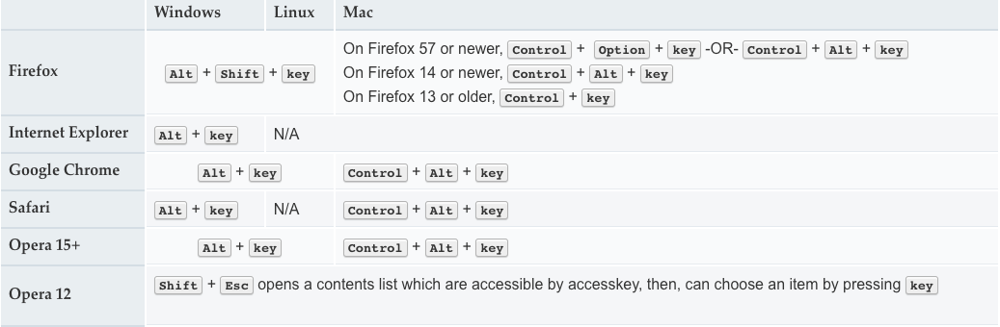

全局属性是所有HTML元素共有的属性; 它们可以用于所有元素，即使属性可能对某些元素不起作用。
dir
枚举属性指示元素文本的方向性。
可以通过HTMLElement.dir来获取/设置元素的方向
-
ltr，这意味着从左到右，用于从左到右书写的语言（如英语）; -
rtl，这意味着从右到左，用于从右到左书写的语言（如阿拉伯语）; -
auto，让用户代理决定。它使用基本算法，因为它解析元素内的字符，直到找到具有强方向性的字符，然后将该方向性应用于整个元素。
Notes
- IE/Edge不支持
auto关键字
accesskey
提供了为当前元素生成快捷键的方式。属性值必须包含一个可打印字符。
可以通过HTMLElement.accessKey来获取/设置元素访问的快捷键
HTMLElement.accessKeyLabel返回一个包含元素访问的快捷键的字符串
各平台激活accesskey的操作
图片来自MDN
Notes
-
IE触发的是
focus事件，其他浏览器是click事件 -
IE在元素被隐藏的情况下是触发不了
accesskey的，因为隐藏的元素是不能被focus聚焦的 -
多个元素使用同一个
accesskey- Chrome浏览器后面的会抵消前面的
- Firefox浏览器都不会触发
click事件，而会变成focus事件 - IE依然是按次序触发
focus事件
-
accesskey值可能与系统或浏览器键盘快捷键或辅助技术功能相冲突。对于一个操作系统来说，辅助技术和浏览器组合可能无法与其他操作系统协同工作。 -
某些
accesskey值可能不会出现在某些键盘上，特别是在国际化是一个问题的时候。 -
依赖于数字的
accesskey值可能会让那些经历认知问题的人感到困惑，因为他们的数字与它触发的功能没有逻辑关联。 -
通知用户
accesskey存在，这样他们就能意识到该功能。如果没有公开这些信息的方法，accesskey可能会被意外激活。
autocapitalize
控制用户输入/编辑文本输入时文本输入是否自动大写，以及如何自动大写
none: 没有应用自动大写（所有字母都默认为小写字母）。sentences: 每个句子的第一个字母默认为大写字母；所有其他字母都默认为小写字母。words: 每个单词的第一个字母默认为大写字母；所有其他字母都默认为小写字母。characters: 所有的字母都默认为大写。
Notes
autocapitalize属性可以覆盖每个元素的行为，比如关闭iOS中用户开启的首字母大写。- 当
input元素的type属性为email，password，url时，autocapitalize不会生效
class
为元素定义类名
contenteditable
定义元素是否可以被编辑，比如div使用此属性来模拟textarea元素
可以通过HTMLElement.contentEditable来获取/设置元素访问的可编辑状态
HTMLElement.isContentEditable返回元素的内容是否可以被编辑
true或者空字符串元素可被编辑false元素不可被编辑
Notes
- 如果未设置此属性，默认值将从其父元素继承。
- 属性的值是枚举属性，且不允许简写
- 可以通过
caret-color属性改变插入符的颜色
data-*
可以让用户在HTML元素上嵌入自定义数据属性的能力，并且可以通过js来进行操作
可以通过HTMLElement.dataset获取元素的自定义属性，是一个对象（key-value，只读）
*的限制
- 不能以
xml开头，无论这些字母是大写还是小写； - 不能包含任何分号 (
U+003A)； - 不能包含A至Z的大写字母。
Notes
- 任何破折号(
U+002D) 都会被下个字母的大写替代(驼峰拼写)。 HTMLElement.dataset属性是一个DOMStringMap- 可以通过
HTMLElement.dataset.testValue( 或者是HTMLElement.dataset["testValue"]) 来访问
draggable
枚举类型的属性，标识元素是否允许使用拖放操作API拖动
true可以被拖动false不可以被拖动- 如果该属性没有设值，则默认值 为 auto ，表示使用浏览器定义的默认行为
Notes
- 枚举属性
- 不允许简写
dropzone
枚举属性，指示可以使用Drag and Drop API在元素上删除哪些类型的内容
copy，表示drop将创建被拖动元素的副本。move，表示拖动的元素将移动到此新位置。link，这将创建拖动数据的链接。
hidden
布尔属性，表示一个元素尚未或者不再相关。例如，它可以被用来隐藏一个页面元素直到登录完毕。如果一个元素设置了这个属性，它就不会被显示。
Notes
- 如果某些内容被标记为隐藏，它将从所有版块中隐藏,包括例如屏幕阅读器.
hidden属性不能用于隐藏那些可以在其它板块中合理显示的内容- 隐藏元素不应与非隐藏元素链接，作为隐藏元素的后代的元素仍然是活动的，这意味着脚本元素仍然可以执行，表单元素仍然可以提交。
- 比如说，用
href标签链接到一个带有hidden标签的区块是不对的。 如果这个区块和这个页面不相干，或者这个区块不适用于这个页面，那没有任何理由需要链接到它。
id
定义唯一标识符（ID），该标识符在整个文档中必须是唯一的。 其目的是在链接（使用片段标识符），脚本或样式（使用CSS）时标识元素。
title
表示与元素相关的一些提示性文本，在鼠标放在元素上时呈现出来。
如果省略了这个属性，就意味着这个元素的最近祖先的标题仍然是相关的（并且可以用作元素的提示信息）。如果这个属性设为空字符串，它就明确意味着，它的最近祖先的标题是不相关的（并且不应用于这个元素的提示信息）。
应用
- 链接：被链接文档的标题或描述
- 媒体元素，例如图像：描述或关联信息
- 段落：脚注或者相关的评论
- 引用：作者信息，以及其他
translate
对应元素的属性值及其子文本节点内容，是否跟随系统语言作出对应的翻译变化。
yes或者不设置,网页在进行本地化的时候，对应内容要被翻译。no对应的内容无需做任何翻译。
tabindex
元素是否可以聚焦，以及在何处参与聚焦
tabindex=负值 (通常是tabindex="-1")，表示元素是可聚焦的，但是不能通过键盘导航来访问到该元素，用JS做页面小组件内部键盘导航的时候非常有用。tabindex="0"，表示元素是可聚焦的，并且可以通过键盘导航来聚焦到该元素，它的相对顺序是当前处于的DOM结构来决定的。tabindex=正值，表示元素是可聚焦的，并且可以通过键盘导航来访问到该元素；它的相对顺序按照tabindex 的数值递增而滞后获焦。如果多个元素拥有相同的 tabindex，它们的相对顺序按照他们在当前DOM中的先后顺序决定。
Notes
- 在
div上设置了tabindex属性，子元素的内容将不能使用箭头键来滚动，除非在子元素上也设置tabindex
style
内联的css样式
spellcheck
枚举属性，标识是否可以检查元素内容的拼写错误
true会检查false不会检查
如果没有设置这个属性，默认值由元素自身类型和浏览器设置决定。默认值也可以被继承，当有祖先元素的 spellcheck 设置为 true 的情况下，子元素的默认值也是 true。
Notes
- 这个属性仅仅是浏览器上的提示: 浏览器并不会强制去检查拼写错误，通常不可编辑的元素是不会去检查拼写错误的，就算它的spellcheck 属性被设置为true而且浏览器支持拼写检查。
各浏览器的默认设置和元素依赖: 来自MDN
| 浏览器 | html |
textarea |
input |
其他 | 附注 |
|---|---|---|---|---|---|
| Firefox | false |
false |
false |
inherited | 当 layout.spellcheckDefault 值为 0 |
| false | true | inherited | inherited | 当 layout.spellcheckDefault 值为 1 (default value) | |
false |
true |
true |
inherited | 当 layout.spellcheckDefault 值为 2 |
|
| Seamonkey | false |
false |
false |
inherited | 当 layout.spellcheckDefault 值为 0 |
| false | true | inherited | inherited | 当 layout.spellcheckDefault 值为 1（默认如此） | |
false |
true |
true |
inherited | 当 layout.spellcheckDefault 值为 2 |
|
| Camino | false |
false |
false |
inherited | 当 layout.spellcheckDefault 值为 0 |
false |
true |
inherited | inherited | 当 layout.spellcheckDefault 值为 1 |
|
| false | true | true | inherited | 当 layout.spellcheckDefault 值为 2（默认如此） | |
| Chrome | false |
true |
? | inherited | |
| Internet Explorer | false |
true |
? | inherited | |
| Opera | false |
true |
? | inherited | |
| Safari | false |
true |
? | inherited |
slot
行为参考VUE的slot
lang
帮助定义元素的语言：不可编辑元素所在的语言，或者用户应该编写可编辑元素的语言。该属性包含一个“语言标记”（由连字符分隔的“语言子标记”组成），其格式为标识语言标记（BCP47）中定义的格式。xml：lang优先与它
:lang()基于元素语言来匹配元素
为什么要使用lang
microdata
具体信息可以查看前端的基础修养
itemid
元素的唯一的全局标识符
Notes
itemid属性只能为同时拥有 itemscope 和 itemtype 的元素指定。itemid只能为拥有itemscope的元素指定，它的相应itemtype引用或定义了支持全局标识符的词汇
itemprop
向元素中添加属性。每一个HTML元素都可以指定一个itemprop属性，一个itemprop属性由name-value对组成。每一个键值对称为一个属性，一个元素可以有一个或者多个属性。属性值可以是一个string或者一个URL，并且可以和大部分元素进行组合。
itemref
在特殊情况，元素不能写在itemscope中时，可以用itemref来标识，itemref使用元素的id来进行关联
Notes
itemref属性只能在指定了itemscope的元素上指定。
itemscope
值为布尔值。定义了一个与元数据关联的数据项。就是说一个元素的 itemscope 属性会创建一个项，包含了一组与元素相关的键值对
Notes
- 每个 HTML 元素都可以有指定的
itemscope属性。一个具有itemscope属性的元素可以没有关联的itemtype，但必须有相关的itemref。
itemtype
用于定义数据结构中的 itemprop（条目属性）
Notes
- 值必须是唯一标识的无序集合（大小写敏感），并且每个标识都是有效的绝对 URL，并且所有都使用相同词汇定义。属性的值必须至少拥有一个标识。
- 条目的类型必须全部为定义在适用规范（例如 schema.org）中的类型，并且必须使用相同词汇定义。
- 只能在指定了
itemscope属性的元素上指定。